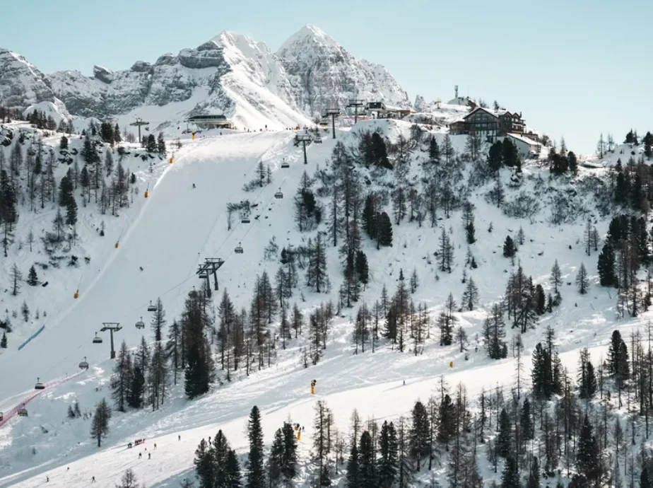

Dimaro Folgarida ist der ideale Ausgangspunkt: Pisten im Winter, Flüsse und Wege im Sommer. Du wählst den Tag, um den Abend kümmern wir uns.
Winter · Dezember – April
Schnee wenige Minuten vor der Tür.
Dimaro Folgarida liegt im Herzen eines der größten Skigebiete des Trentino. Die Lifte sind nur wenige Minuten entfernt, Madonna di Campiglio erreichen Sie auf Skiern, und die Gletscher am Tonale und in Pejo liegen weniger als eine Autostunde entfernt.

Die Skigebiete
Vier Skigebiete, ein Ausgangspunkt.
01
Folgarida-Marilleva
Unser Hausskigebiet. Die Kabinenbahnen von Folgarida starten wenige Minuten von der Locanda entfernt und führen zu Pisten, die sich durch den Wald ziehen, mit zwei beleuchteten Abfahrten für das Skifahren nach Sonnenuntergang. Von Daolasa bringt die Gondel Sie in zwölf Minuten auf 2.000 Meter.
ca. 60 km Pisten
25 Lifte
4 Snowparks im Gebiet
ca. 10 Minuten
02
Madonna di Campiglio
Auf Skiern mit Folgarida-Marilleva und Pinzolo verbunden: Zusammen bilden sie die Skiarea Campiglio Dolomiti di Brenta. Pisten bis auf 2.500 Meter vor der Kulisse der Brenta-Dolomiten, UNESCO-Welterbe, und lange Abfahrten wie die Graffer mit fast fünf Kilometern. Mit dem Auto folgen Sie einfach der Straße, an der die Locanda liegt.
über 150 km mit Folgarida und Pinzolo
bis 2.500 m
ca. 25 Minuten
03
Tonalepass und Presena-Gletscher
Das Skigebiet Pontedilegno-Tonale verbindet das Trentino mit der Lombardei. Mit dem Presena-Gletscher geht es bis auf 3.000 Meter, mit schneesicheren Pisten die ganze Saison und Skifahren bis weit in den Frühling. Auf 2.000 Metern ein Snowpark mit Skicross-Strecke.
ca. 100 km Pisten
30 Lifte
bis 3.000 m
ca. 45 Minuten
04
Pejo3000
Ein ruhigeres, überschaubares Skigebiet im Nationalpark Stilfserjoch. Weniger volle Pisten, eine Skischule mit viel Gespür für Kinder und eine Seilbahn, die Richtung 3.000 Meter führt. Es bezeichnet sich als erstes plastikfreies Skigebiet der Welt.
20 km Pisten
7 Lifte
bis 3.000 m
ca. 40 Minuten
Ungefähre Fahrzeiten mit dem Auto ab der Locanda. Die Angaben zu den Skigebieten beziehen sich auf die laufende Saison und können je nach Liftbetrieb variieren.
Ein Skipass, acht Orte.
Der Skipass Skirama Dolomiti Adamello Brenta öffnet 380 km Pisten und 150 Lifte: Neben den Skigebieten des Val di Sole gehören Paganella, Monte Bondone und Alpe Cimbra dazu. Eine ganze Woche, ohne zweimal dieselbe Piste zu fahren.
Mit dem Zug zum Lift.
Die Bahn Trento–Malè–Mezzana hält in Dimaro und in Daolasa, wo der Bahnhof direkt mit der Gondel zu den Pisten verbunden ist. Das Auto bleibt stehen, und Sie kommen mit den Skiern auf der Schulter in die Höhe.
Pistenplan
Das ganze Skigebiet auf einen Blick.
Folgarida-Marilleva, Madonna di Campiglio und Pinzolo sind auf Skiern verbunden. Entdecken Sie die Karte: Tippen Sie auf einen Punkt für Höhen, Hütten und Services.
Rund 45 km Loipen zwischen Tonalepass, Vermiglio, Cogolo, Ossana, Mezzana, Commezzadura und Rabbi, mit zwei ausgestatteten Langlaufzentren in Vermiglio und im Val di Rabbi. Die Loipe in Commezzadura ist der Locanda am nächsten.
02
Schneeschuhwandern
Dutzende markierte Touren durch Wälder, alte Höfe und Almen, von leicht bis anspruchsvoll. Zwei beginnen direkt in Dimaro Folgarida: der Aufstieg zur Malghet Aut und die Via degli Imperatori. Schneeschuhe kann man auch im Ort leihen.
03
Skitouren und Freeride
Aufstiege zur Malga Saviana, zum Monte Sole im Val di Rabbi oder zum Presena-Gletscher, am besten mit den Bergführern der Alpin- und Skitourenschule Val di Sole. Immer mit LVS-Gerät, Schaufel und Sonde.
04
Therme Pejo
Nach dem Schnee die Wärme. In Peio Fonti warten die Wasser der drei historischen Quellen des Tals, ein Schwimmbad und ein Wellnessbereich, auch im Winter geöffnet. Die beste Art, müde Beine am Ende des Tages zu entspannen.
05
Weihnachtsmärkte und Krippen
Zu Weihnachten wird Ossana zum Krippendorf, mit über tausend Krippen in Gassen und Höfen unterhalb der Burg San Michele. Das Val di Rabbi antwortet mit seinem Tal der Krippen, während Malè und das Val di Pejo ihre Weihnachtshütten erleuchten.
06
Erlebnisse im Schnee
Hundeschlittenfahrten mit Huskys am Tonalepass, Fatbike auf verschneiten Wegen, Eisklettern an gefrorenen Wasserfällen und die Rodelbahn Fevri in Madonna di Campiglio mit fast drei Kilometern Abfahrt.
Sommer · Juni – Oktober
Flüsse, Wege und zwei Räder.
01
Radweg Val di Sole
Der Radweg führt durch Dimaro und folgt dem Noce durch das Tal. Ideal für Familien, auch mit dem E-Bike.
02
Rafting auf dem Noce
Der Noce ist einer der beliebtesten Flüsse Europas für Rafting und Kajak, mit Strecken für Anfänger und Profis.
03
Wandern in den Parks
Nationalpark Stilfserjoch und Naturpark Adamello Brenta: Wege, Almen und Bergseen für jedes Niveau.